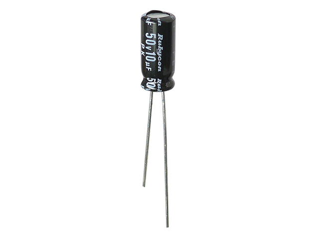
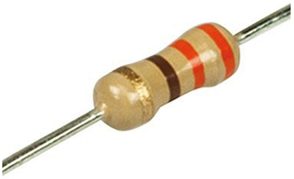
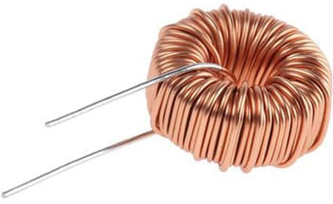
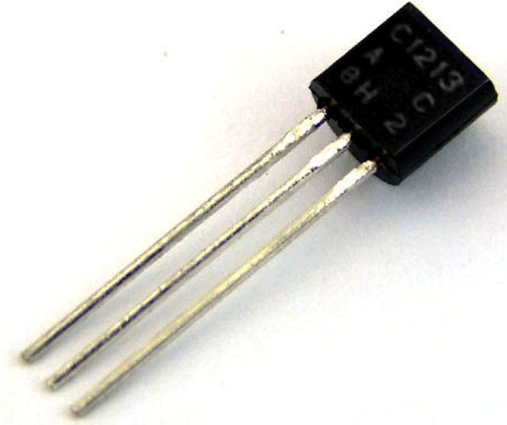
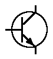
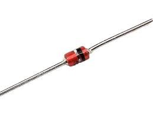
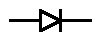
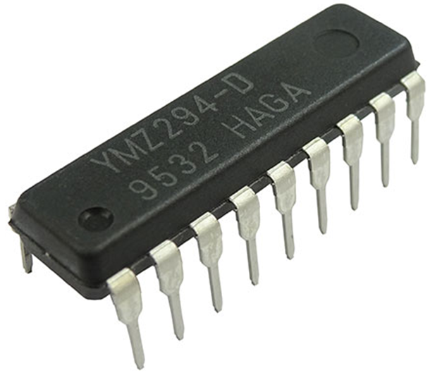
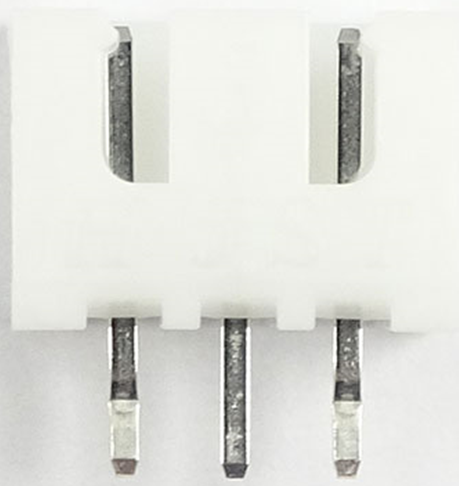
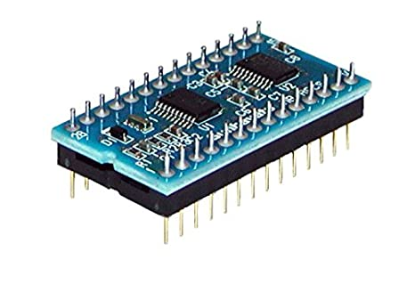

電子部品の説明(初心者用)
- コンデンサ
- 抵抗器
- インダクタ
- トランジスタ
- ダイオード
- 集積回路(IC)
- コネクタ
- 電源スイッチ
3大受動部品
受動部品とは、供給された電力を整流にしたり増幅させず、そのまま使ったり蓄えたりする部品のことです。 この中で特に3つのコンデンサ、抵抗器、インダクタを3大受動部品といい、電子回路を作るときにとても重要な部品となってきます。
コンデンサ
コンデンサとは電気を蓄えて放出できる部品で、電源と同じような役割ができる。
また、直流電流は通さないが交流電流は通すことができるので、電圧を一定に保つことができる。
高校物理のときに「C」としてよく扱われていたと思う。電源から電気をコンデンサに蓄えた後に電源を外してコンデンサを繋げて回路を作ることで、
電気が流れると言う問題をやったと思われるが、まさにそれである。
コンデンサには正と負があり、足の長いほうが正であり、短いほうが負である。コンデンサを使うときは間違えないように配置したい。

コンデンサ
コンデンサの回路図記号
抵抗器
オームの法則を考えるとわかる通り、抵抗器を使うと電流及び電圧を変えることができる。これにより、過電流及び過電圧を防ぐことができる。 また、熱を発生させることができる。実験で抵抗器の熱を発生させる特徴を用いて水の温度を上昇させることをやったことがあるかもしれない。 抵抗器を見ると色のついた線が何本か入っているが、この色によって抵抗値がわかるようになっている。
以下は抵抗器の写真と回路図記号(様々な種類があるため1つの例である)である。
抵抗器
抵抗器の回路図記号
インダクタ
コイルと言われることもある(コイルとインダクタは別のものを指すときもあるため注意が必要である)。
インダクタは電流を流すと磁場が発生する。また、磁場が発生すると、電流が発生するという性質を持っている。
また、インダクタは直流電流を通しやすく、交流電流を通しにくいという性質を持ってため、この役割は、コンデンサとは対称的である。
中高校の物理で電磁誘導、右ねじの法則としてよく出てきたと思う。

インダクタ
インダクタの回路図記号
能動部品
能動部品とは、受動部品とは逆で、信号を増幅させる、あるいは回路にエネルギーを供給できる部品のことです。 能動部品は多くの種類がありますが、特に有名な部品を下に3つ記載しました。
トランジスタ
トランジスタの役割は信号を増幅させる、回路のスイッチの役割として代用できることである。 高校物理の電磁気の範囲でNPN型、PNP型、エミッタ、ベース、コレクタを習ったと思うが、これらがトランジスタ仕組みに当たる。
以下はトランジスタの写真と回路図記号(様々な種類があるため1つの例である)である。
トランジスタ

トランジスタの回路図記号
ダイオード
ダイオードは電気の流れを一方向にする、電気を整える、電圧を検波する特徴を持つ。 検波では、音声信号を取り出す、光を電流に変えることが可能である。 下の回路図記号は高校でも見たことがあると思われる。
以下はダイオードの写真と回路図記号(様々な種類があるため1つの例である)である。 ダイオード

ダイオードの回路図記号
集積回路(IC)
集積回路は、シリコン半導体基板の上にトランジスタ、抵抗器、コンデンサなどの 機能を持つ素子をたくさん集積させた電子部品である。 回路構成が同じものは多いため集積回路を使うことにより それらをいちいち作らなくても使うことができるためとても便利な部品です。 授業で習ったムーアの法則はこれに基づく理論です。
以下は集積回路の写真である。
集積回路
その他の部品
コネクタ
はんだこてを用いていちいち接続するのがめんどくさいため、コネクタを用いてつなぐ、切り離すの作業を単純化している。 スマホやパソコンを充電する時もコネクタを用いています。

コネクタ
マイコン
マイコンは小さなコンピュータで、プログラミングを書いてそれを実行されるときに非常に役立ちます。 こちらのページで詳しく説明しているので是非参考にしてください。 下の写真は、マイコンの写真です。
マイコン
参考
KOA村田製作所